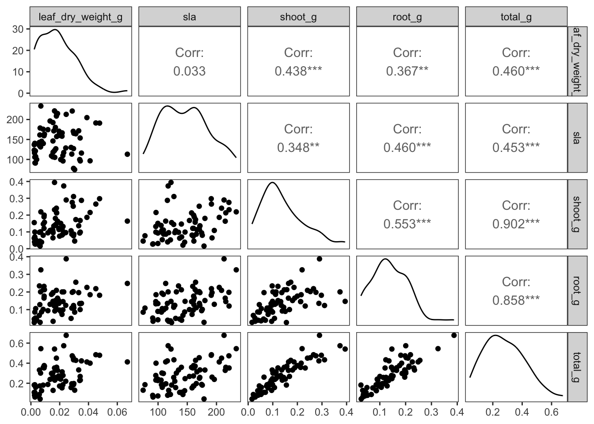
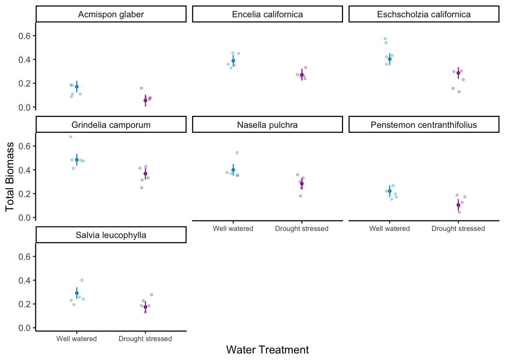
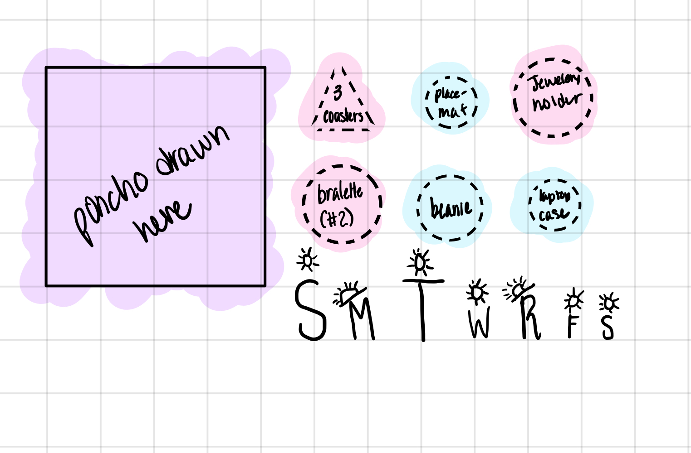
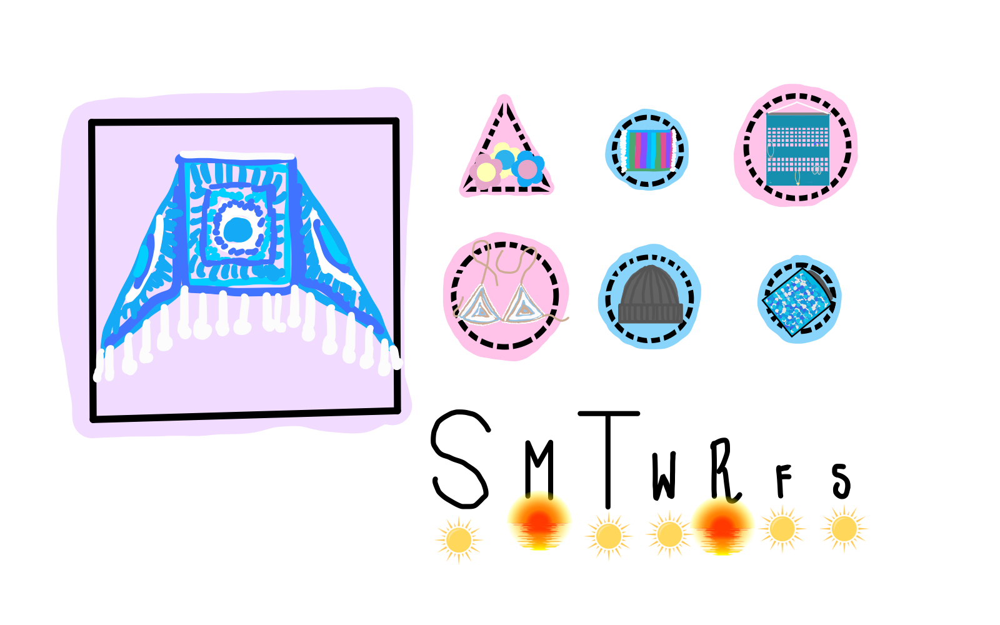
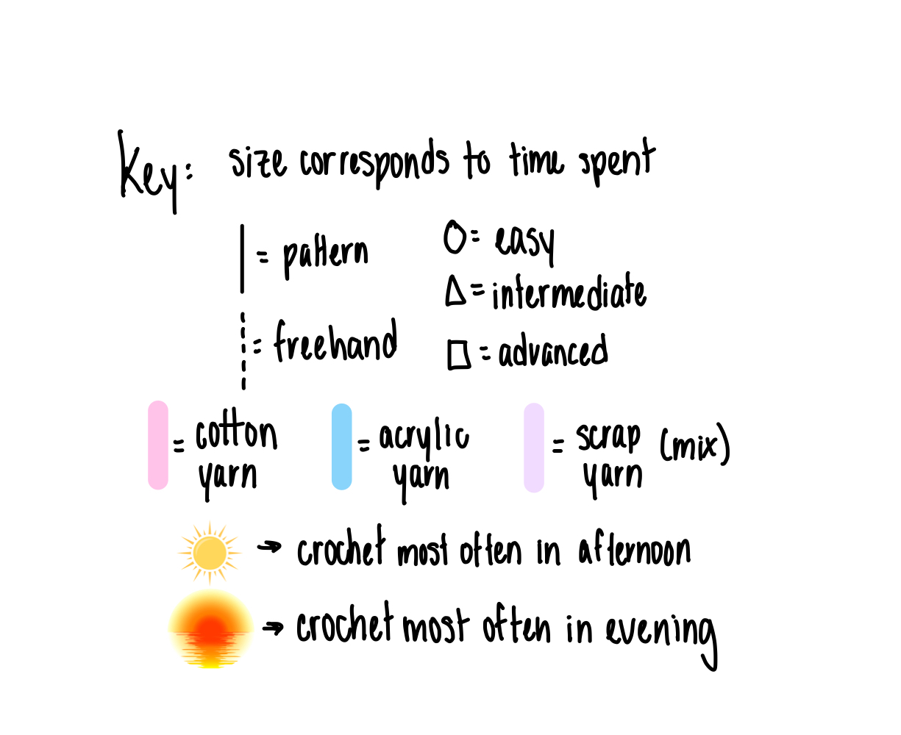

── Attaching core tidyverse packages ──────────────────────── tidyverse 2.0.0 ──
✔ dplyr 1.1.4 ✔ readr 2.1.5
✔ forcats 1.0.0 ✔ stringr 1.5.1
✔ ggplot2 3.5.0 ✔ tibble 3.2.1
✔ lubridate 1.9.3 ✔ tidyr 1.3.1
✔ purrr 1.0.2
── Conflicts ────────────────────────────────────────── tidyverse_conflicts() ──
✖ dplyr::filter() masks stats::filter()
✖ dplyr::lag() masks stats::lag()
ℹ Use the conflicted package (<http://conflicted.r-lib.org/>) to force all conflicts to become errors
library(readxl)library(here)
here() starts at /Users/rjgullette/Dropbox/Git/Gullette-RebeccaJane_homework-03
library(janitor)
Attaching package: 'janitor'
The following objects are masked from 'package:stats':
chisq.test, fisher.test
# visualizing pairslibrary(GGally)
Registered S3 method overwritten by 'GGally':
method from
+.gg ggplot2
# model selectionlibrary(MuMIn)# model predictionslibrary(ggeffects)# model tableslibrary(gtsummary)library(flextable)
Attaching package: 'flextable'
The following objects are masked from 'package:gtsummary':
as_flextable, continuous_summary
The following object is masked from 'package:purrr':
compose
library(modelsummary)
`modelsummary` 2.0.0 now uses `tinytable` as its default table-drawing
backend. Learn more at: https://vincentarelbundock.github.io/tinytable/
Revert to `kableExtra` for one session:
options(modelsummary_factory_default = 'kableExtra')
options(modelsummary_factory_latex = 'kableExtra')
options(modelsummary_factory_html = 'kableExtra')
Silence this message forever:
config_modelsummary(startup_message = FALSE)
drought_exp <-read_xlsx(path =here("data", "Valliere_etal_EcoApps_Data.xlsx"),sheet ="First Harvest")# quick look at data str(drought_exp)
# cleaningdrought_exp_clean <- drought_exp %>%clean_names() %>%# nicer column namesmutate(species_name =case_when( # adding column with species scientific names species =="ENCCAL"~"Encelia californica", # bush sunflower species =="ESCCAL"~"Eschscholzia californica", # California poppy species =="PENCEN"~"Penstemon centranthifolius", # Scarlet bugler species =="GRICAM"~"Grindelia camporum", # great valley gumweed species =="SALLEU"~"Salvia leucophylla", # Purple sage species =="STIPUL"~"Nasella pulchra", # Purple needlegrass species =="LOTSCO"~"Acmispon glaber"# deerweed )) %>%relocate(species_name, .after = species) %>%# moving species_name column after speciesmutate(water_treatment =case_when( # adding column with full treatment names water =="WW"~"Well watered", water =="DS"~"Drought stressed" )) %>%relocate(water_treatment, .after = water) # moving water_treatment column after water
ggpairs(drought_exp_clean, # data framecolumns =c("leaf_dry_weight_g", # columns to visualize"sla", "shoot_g", "root_g", "total_g"), upper =list(method ="pearson")) +# calculating Pearson correlation coefficienttheme_bw() +# cleaner themetheme(panel.grid =element_blank()) # getting rid of gridlines

ggplot(data = drought_exp_clean, # data frameaes(x =reorder(species_name, # reordering x-axis-total_g, # in reverse order of mean total massfun = mean), # calculating mean to reordery = total_g)) +# y-axisgeom_jitter(width =0.1, # narrow jitterheight =0) # not jittering points up and down
ggplot(data = drought_exp_clean, # data frameaes(x = water_treatment, # x-axisy = total_g)) +# y-axisgeom_jitter(width =0.1, # narrow jitterheight =0) # not jittering points up and down
b. Write a 5-6 sentence “statistical methods” section. (8 points)
Your answer should be in paragraph form and include:
how you addressed the central question(s) (i.e. to examine the influence of ____, ____, and ____ on _____, I…) how you chose the final model (i.e. to determine the model that best described ____, I…) how you visually determined that your final model conformed to the assumptions of a linear model (i.e. to evaluate linear model assumptions, I…)
# creating new data frame of model predictions for plottingmodel_preds4_for_plotting <- model_preds4 %>%rename(water_treatment = x,species_name = group)ggplot() +# underlying datageom_point(data = drought_exp_clean,aes(x = water_treatment,y = total_g,color = water_treatment),position =position_jitter(width =0.1, height =0),size =0.8,alpha =0.3) +geom_pointrange(data = model_preds4_for_plotting,aes(x = water_treatment,y = predicted,ymin = conf.low,ymax = conf.high,color = water_treatment),size =0.1) +# cleaner themelabs(x ="Water Treatment", y ="Total Biomass") +theme_classic() +theme(axis.text.x =element_text(size =7),legend.position ="none") +scale_color_manual(values =c("Well watered"="deepskyblue3", "Drought stressed"="#993399")) +# creating different panels for speciesfacet_wrap(~species_name)

d. Write a caption for your visualization.
e. Write a 3-4 sentence results section
Your answer should be in paragraph form and address the following points:
what predictors “best” described total mass (include model statistics here)? on average, what differences did you find between water treatments? on average, what differences did you find between species?
Problem 2. Affective Visualization
Since my data is about crocheting, I want to draw the projects that I’ve completed in different sizes relative to the time I spent on them, with a border indicating pattern type and difficulty, and highlighted according to type of yarn. I can add little icons to indicate background activity, recipient, time of day, etc. I would like to organize them chronologically and have an additional icon with the days of the week and their frequencies indicated with shape.
Create a sketch (on paper) of your idea.

Affective Visualization Sketch
Make a draft of your visualization.

Crochet Data Affective Visualization

Key
Write an artist statement.
I was very inspired by Stefanie Posavec and Giorgia Lupi’s Dear Data project and would like to do a similar collage-type representation with icons, shapes, colors, and borders representing my data.
Probelm 3 Statistical Critique
a. Revisit and summarize
What are the statistical tests the authors are using to address their main research question?
Insert the figure or table you described in Homework 2 here.
b. Visual clarity
How clearly did the authors visually represent their statistics in figures? For example, are the x- and y-axes in a logical position? Do they show summary statistics (means and SE, for example) and/or model predictions, and if so, do they show the underlying data?
c. Aesthetic clarity
How well did the authors handle “visual clutter”? How would you describe the the data:ink ratio?
d. Recommendations
What recommendations would you make to make the figure better? What would you take out, add, or change? Provide explanations/justifications for each of your recommendations.
Alternatively, if they did not represent their statistics in a figure, what kind of figure would you recommend to them? Describe the x- and y-axes, with any geometries and aesthetics (colors, etc.). Provide enough explanation such that someone would be able to create the figure you describe in code. Provide explanations/justifications for the figure you would recommend.